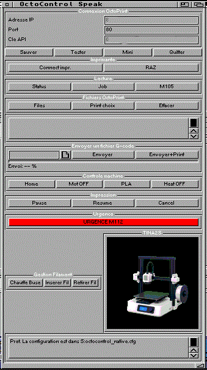

|
Menu | SlicerMUI | Depannage
OctoControlSpeak

A quoi ca sert ?
OctoControlSpeak controle OctoPrint depuis l'Amiga sans navigateur moderne.
Il envoie des commandes a OctoPrint, qui pilote ensuite l'imprimante 3D.
Configuration
S:octocontrol_native.cfg
OCTOPRINT=192.168.1.xxx:80
APIKEY=PASTE_YOUR_OCTOPRINT_API_KEY_HERE
La cle API se recupere dans OctoPrint avec un navigateur moderne. Ne mettez
pas votre vraie cle dans une archive publique.
Boutons connexion
| Sauver | Sauve IP, port et cle API dans la configuration. |
| Tester | Verifie qu'OctoPrint repond. |
| Connect impr. | Demande a OctoPrint de reconnecter l'imprimante. |
| RAZ | Arrete les chauffes, remonte Z, degage X/Y et coupe les moteurs. |
| Mini | Masque la fenetre principale et garde le moniteur. |
Boutons lecture
| Status | Lit l'etat imprimante, temperatures et progression. |
| Job | Lit les informations de l'impression en cours. |
| M105 | Commande temperature utile pour tester la communication. |
| Files | Liste les fichiers G-code presents dans OctoPrint. |
| Print choix | Imprime le fichier selectionne dans la liste OctoPrint. |
| Effacer | Efface le fichier selectionne dans OctoPrint. |
Boutons impression
| Envoyer | Envoie un fichier G-code de l'Amiga vers OctoPrint. |
| Envoyer+Print | Envoie le G-code puis lance l'impression. |
| Pause | Met l'impression en pause. |
| Resume | Reprend l'impression. |
| Cancel | Annule l'impression puis lance une sequence de remise au calme. |
| URGENCE M112 | Arret d'urgence firmware. A utiliser seulement en cas de probleme reel. |
Boutons machine
| Home | Retour origine de la machine. |
| Mot OFF | Coupe les moteurs. |
| PLA | Chauffe pour PLA selon la configuration. |
| Heat OFF | Coupe les chauffes. |
| Chauffe Buse | Chauffe la buse pour manipulation filament. |
| Inserer Fil | Insere le filament. |
| Retirer Fil | Retire le filament. |
Parole
La parole utilise SAY, narrator.device et translator.library. Les phrases
peuvent etre modifiees dans S:octocontrol_speech.cfg. Si la parole n'est pas
installee, le programme reste utilisable.
Retour menu
|